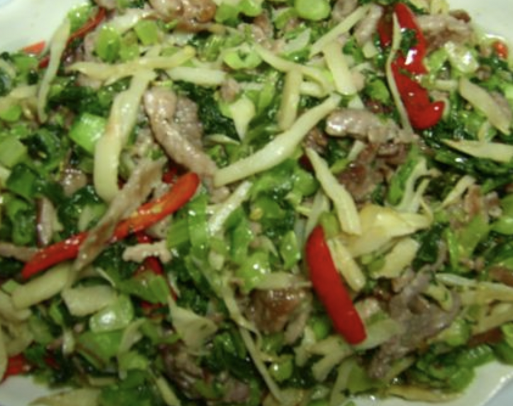

#22 - PRESERVED VEGETABLE WITH PORK - 雪裡紅炒肉絲
This dish goes well by itself, but particularly well with soup noodle or stir-fried Shanghainese rice stick. It is also a proper dish in Shanghainese restaurants.

INGREDIENTS:
- 100 g Salted preserved vegetable (雪裡紅)
- 150g Pork slices
- 100g can / fresh Bamboo shoot
- ½ Red bell pepper
- 1 tsp sugar
- 1 TBSP Cooking wine
- Vegetable oil
Marinade:
- 2 slices ginger
- ½ tsp salt
- pepper to taste
- 1 tsp cornstarch / potato starch
- 3 TBSP water
Directions:
- Cut the salted preserved vegetable (雪裡紅) into small pieces. Cut the leave in both directions, so it is not stringy.
- Soak the vegetable in a bowl of water for at least 4 hours. Change water a few times to wash out the saltiness.
- Squeeze dry the salted vegetable and put 1 tsp of sugar to marinate.
- Slice bamboo shoot into thin julienne along the fiber, and then boil it in some salt water to remove the canned taste.
- Slice pork into fine julienne then put in the marinade ingredients. Mix well and let sit for ½ hour.
- Slice the red bell pepper into the same julienne size.
- In a wok or frying pan, add 2 TBSP vegetable oil.
- When oil is hot, add the preserved vegetable. Stir-fry for a few minutes in low heat. Make sure it does not burn.
- Add the bamboo shoot then a few TBSP water. Cook for another 1 – 2 minutes. Remove and set aside.
- Clean the wok or frying pan then put on the heat again. When hot, add some vegetable oil.
- Put the pork in and stir-fry for a bit. Add the Shao Xing wine.
- When the pork is fully cooked, add the preserved vegetable, mix well. Just before serving, add the red bell pepper.
(Serves 1 person)
Note:
- Easier way to slice pork: Put the fresh pork in the freezer a day before using it. Remove from freezer and slightly defrost it (1 hour) for easy slicing. The pork should be solid, but easy for the knife to slice through.
- You may prepare this dish early or when free, and add it to soup noodle, fried noodle or fried rice cake when you need.
- Chicken maybe used instead of pork.